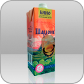
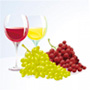

Лидеры продаж

TetraPak 1000 ml Base
Изабелла
Натуральное полусладкое красное вино.
Крепость 9-11%. Сахар 30-40 г/дмЗ
Новости
- 08 мартаУже в античном греко-римском мире, а затем в средние века, в эпоху Возрождения...
- 23 февраляУже в античном греко-римском мире, а затем в средние века, в эпоху Возрождения...
- 25 февраляУже в античном греко-римском мире, а затем в средние века, в эпоху Возрождения...
О КОМПАНИИ
Кубанские виноделы, сохраняя традиции качества виноделия, бережно передавали секреты из поколения в поколение.
Краснодарский край, где солнечных дней в году больше чем пасмурных славится очень плодородной почвой. Поэтому виноделие является одной из основных отраслей Краснодарского края...
Полезная информация
На протяжении тысячелетий лечебный потенциал вина был замечен всеми.
Уже в античном греко-римском мире, а затем в средние века, в эпоху Возрождения, во времена просвещения - зарождение промышленной революции, - вино в традиционной медицине было одним из самых распространенных лечебных средств.
Немало подтверждений того, что все достоинства, в которые верили древние, оказались вполне...